The African–Eurasian collision that built France's mountains, and the earthquakes and volcanoes that come with it.
France's Tectonic Setting
Mainland France sits in the interior of the Eurasian Plate, so most of the country is not directly on the edge of a plate.
The nearest major boundary line is to the south, along the African (Nubian) Plate. The African plate is slowly pushing north into the Eurasian Plate which is a
convergent boundary. Instead of one sharp line it is a wide, diffuse zone of deformation that runs through the Mediterranean and reaches up into southern France (U.S. Geological Survey, n.d.-a).
That slow collision is the force that pushed the crust upward to build the Alps and the Pyrenees,
and it is why southern France (Provence, the Côte d'Azur, the Alps, and the Pyrenees) is far more prone to earthquakes and volcanos than the more stable north.
Natural Disasters in France
Because France is not directly located on an active plate edge, mainland France does not have the huge, frequent disasters seen in places like Japan or Chile. It does, however, experience all three of the classic tectonic hazards. Afar off from mainland France, its overseas territories face some of the most dangerous volcanoes on Earth.
Earthquakes
Moderate earthquakes are regular in the Alps, the Pyrenees, Provence, and the Rhine rift near Alsace. They rarely reach the magnitudes seen at plate boundaries, but they can still cause real damage — covered in detail further down this page.
Volcanoes
The volcanoes of mainland France, in the Auvergne region, are dormant and none has erupted in thousands of years. France's overseas territories are a different story: Martinique, Guadeloupe, and Réunion all have active volcanoes, including one of the most active in the world.
Tsunamis
Tsunamis are rare but not impossible for mainland France. In 1979, an underwater landslide during construction work at Nice's airport triggered a small tsunami on the Côte d'Azur that killed several people (Petley, 2022). The Mediterranean coast and the overseas island territories carry the highest tsunami risk consdiering that they are closer to the plate boundary.
Rock & Mineral Resources
What rocks and minerals are found in France?
France's varied geology gives it a wide range of materials. The old, hard basement rock of Brittany and the Massif Central is largely granite,
while the Paris Basin and much of the north and southwest are layered sedimentary rock, especially limestone which is
the pale stone that so many French cathedrals and buildings are made of. France was also historically rich in coal (the Nord–Pas-de-Calais and Lorraine basins),
iron ore (the famous “minette” ore of Lorraine), bauxite (the ore of aluminum, actually named after the village of Les Baux-de-Provence),
potash and salt (Alsace), gypsum (mined around Paris hense the term “plaster of Paris”), and talc
(the Luzenac mine in the Pyrenees is one of the largest in the world; Imerys, n.d.).
How do these resources affect jobs and exports?
For much of the 1800s and 1900s, coal and iron were the backbone of French heavy industry, employing hundreds of thousands of people across Lorraine and the northern coalfields and
feeding the country's steel mills. Most of that mining has since closed — the last French coal mine closed in 2004 (BBC News, 2004) — and France now imports most of its metal ores.
What remains economically important today is more about industrial and building materials: limestone and aggregates for cement and construction, gypsum, salt, and specialty minerals like talc,
which is still mined in the Pyrenees and exported worldwide for use in paper, plastics, cosmetics, and paint.
What other impacts come from these resources?
The rise and fall of mining shaped whole regions. When the coal and iron industries closed, areas like Nord–Pas-de-Calais and Lorraine faced heavy job
losses and a long economic decline that they are still recovering from; the former coal basin is now a UNESCO World Heritage site that recognizes exactly that industrial heritage (UNESCO World Heritage Centre, n.d.).
There are environmental costs too, from ground subsidence and polluted water around old mine sites to the cleanup of former uranium mines in the Massif Central.
Significant Earthquakes
Historical examples
Mainland France's earthquakes are usually moderate, but a few stand out:
1356 — Basel: centered just across today's border in Switzerland, this is the largest known earthquake in central Europe and caused damage in the Alsace region of France (Swiss Seismological Service, n.d.).
1909 — Lambesc (Provence): at roughly magnitude 6, this is the deadliest earthquake in modern mainland France, killing 46 people and destroying villages northwest of Aix-en-Provence (EPOS-France, 2026).
1967 — Arette (Pyrenees): a shallow quake that badly damaged the town of Arette near the Spanish border (Rothé, 1967).
2019 — Le Teil (Ardèche): only about magnitude 5, but very shallow and on a fault long thought to be inactive. It damaged hundreds of buildings and surprised scientists, showing that even “quiet” parts of France can shake (BRGM, n.d.-a).
Overseas: Martinique and Guadeloupe sit directly on a subduction zone in the Lesser Antilles and face a genuinely high earthquake risk, including the magnitude 6.3 Les Saintes earthquake of 2004 (U.S. Geological Survey, n.d.-b).
How does the government help people prepare?
France divides the country into official seismic zones, from very low to moderate risk on the mainland and high risk in the Antilles (Géorisques, n.d.). New buildings in higher-risk zones must follow earthquake-resistant construction rules based on the European standard known as Eurocode 8 (Eurocode 8, 2025). The government geological survey, the BRGM, and national seismic networks monitor ground movement around the clock (BRGM, n.d.-c), and each at-risk town is required to publish a local risk-information document (a “DICRIM”) so residents know what hazards they face and what to do (Géorisques, n.d.). In the overseas Antilles, a dedicated Plan Séisme Antilles funds the reinforcement of schools, hospitals, and other public buildings (BRGM, n.d.-b).
Mountain Ranges
France is ringed and crossed by several mountain ranges, from the young, jagged Alps to the old, rounded Vosges.
01
The Alps
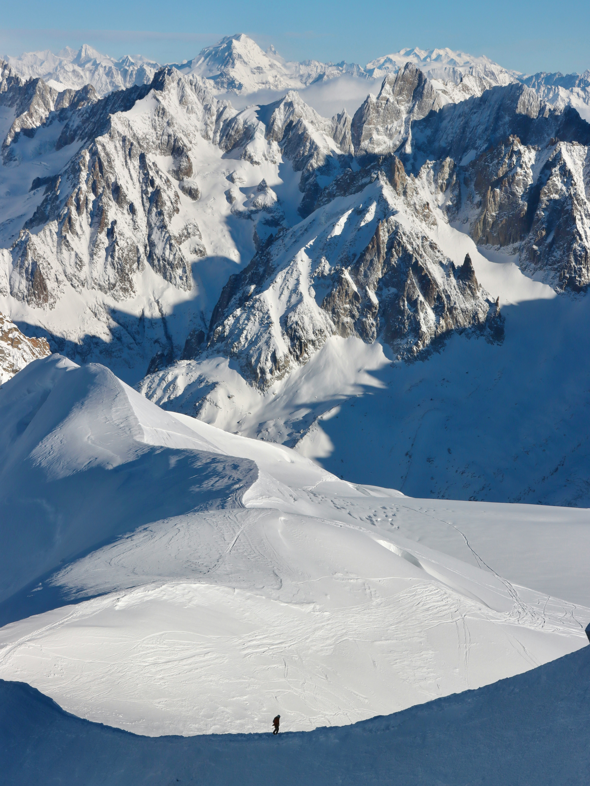
Photo: Hongbin / Unsplash
France's highest and youngest mountains, formed by the ongoing collision of Africa and Europe. These are fold-and-thrust mountains, where layers of rock were squeezed, stacked, and pushed upward. They include Mont Blanc at 4,809 m (15,777 ft), the highest peak in Western Europe (Encyclopedia Britannica, n.d.). The French Alps run along the southeastern border with Italy and Switzerland.
02
The Pyrenees
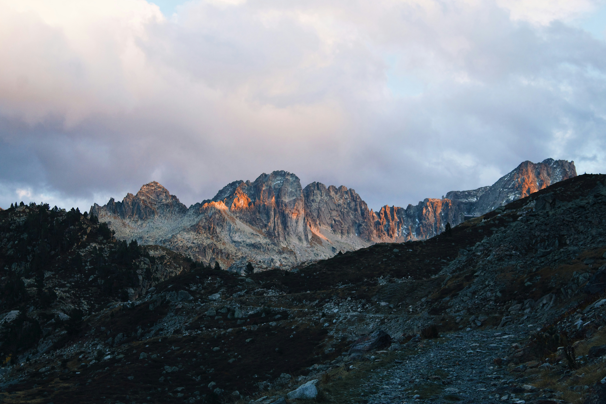
Photo: M. Balland / Unsplash
A steep chain forming the entire border with Spain, from the Atlantic to the Mediterranean. Also built by collision (the Iberian landmass pushing into Europe), the Pyrenees are older and more eroded than the Alps but still rise above 3,000 m; the highest point on the French side is the Vignemale at about 3,298 m (Cauterets.com, n.d.).
03
The Massif Central
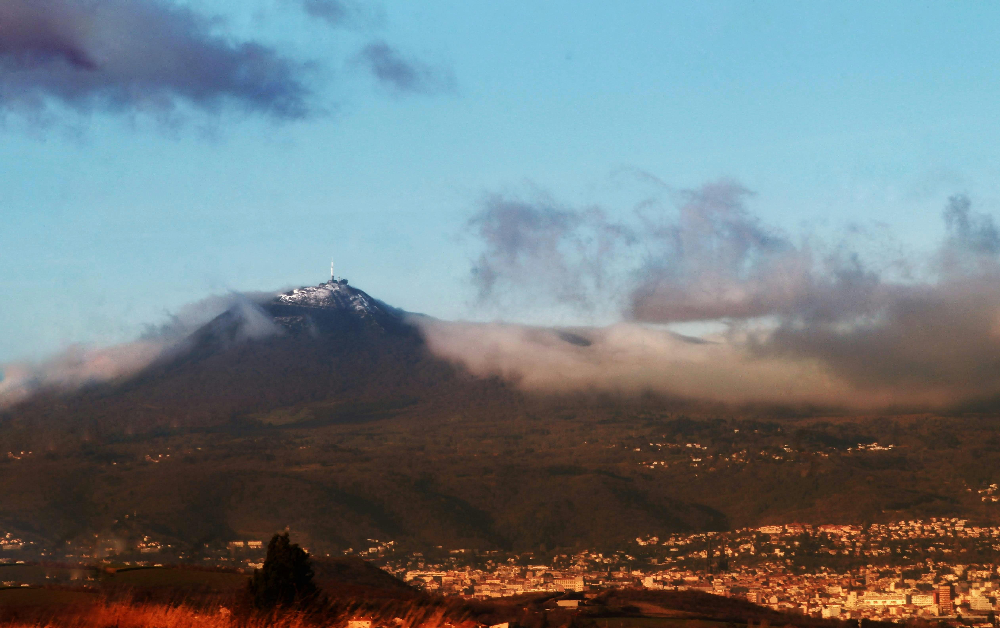
Photo: M. Grolet / Unsplash
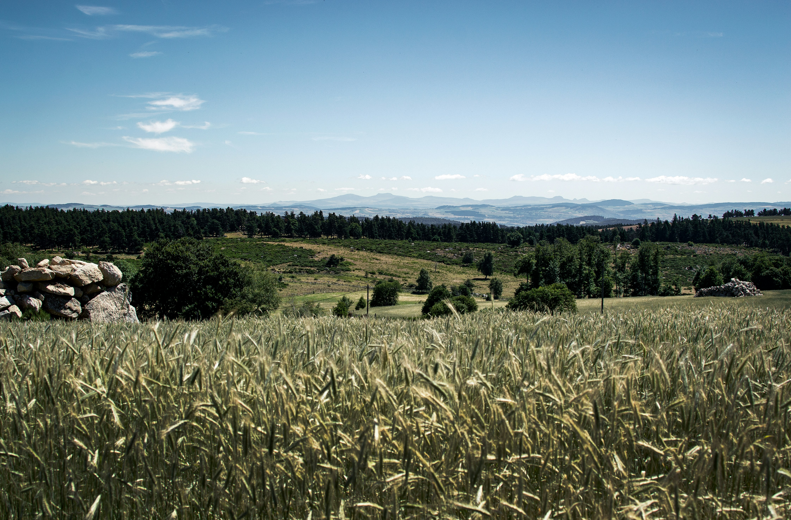
Photo: G. Spinhayer / Unsplash
A broad, ancient uplifted plateau covering much of south-central France. Its rock is old and hard, but it was later lifted and dotted with volcanoes (see below). Its high point, the Puy de Sancy, reaches 1,885 m.
04
The Jura
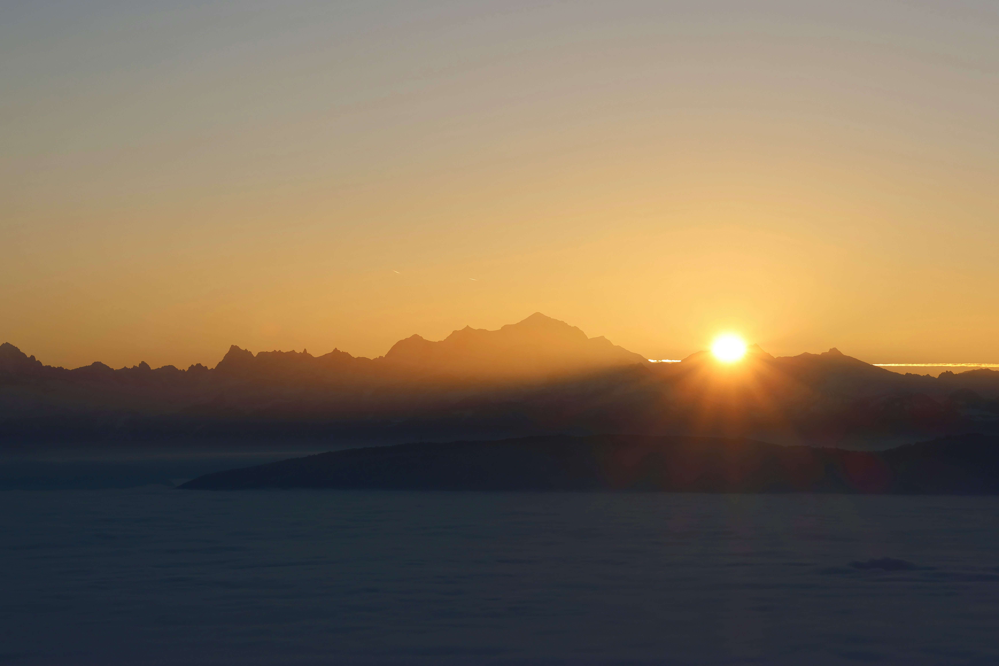
Photo: Nerea JH / UnsplashPhoto: T. Arnold / Unsplash
A range of gently folded limestone mountains along the Swiss border, northeast of the Alps. Their rocks are so characteristic that the Jurassic period of geologic time is named after them (National Park Service, n.d.).
05
The Vosges
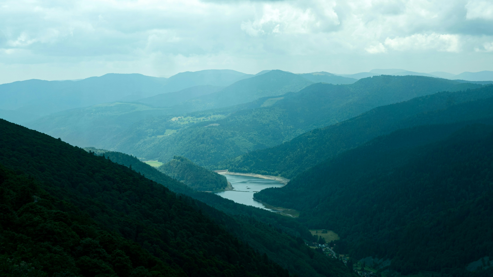
Photo: T. Aartsma / UnsplashPhoto: C. van Battum / Unsplash
Old, rounded granite mountains in the northeast, forming the western shoulder of the Rhine rift valley. They face the Black Forest of Germany across the Rhine and are much lower and smoother than the Alps, worn down over a very long time.
How do the mountains shape weather, water, and culture?
Weather: The mountains act as barriers that wring rain out of passing air, so one side is wet while the sheltered side sits in a drier “rain shadow.” The Alps help give the Côte d'Azur its warm, sunny Mediterranean climate, and mountain winds strongly shape local weather.
Water: Snow and glaciers in the Alps and Pyrenees feed France's major rivers like the Rhône and the Garonne which both begin in the mountains (Encyclopedia Britannica, n.d.). These major rivers supply drinking water, irrigation, and large amounts of hydroelectric power from mountain dams.
Culture: The mountains support alpine skiing and tourism, seasonal livestock herding (transhumance), famous mountain cheeses, and distinct regional cultures such as the Basque people of the western Pyrenees.
Protection and trade routes
Historically the Pyrenees were a natural wall between France and Spain, crossed only at a few passes — the pass at Roncevaux is famous from the medieval Song of Roland. The Alps guarded the route into Italy, where passes like Mont Cenis and the Great St Bernard carried traders and armies (both Hannibal and, much later, Napoleon crossed the Alps). Today those same barriers are pierced by great tunnels (the Mont Blanc and Fréjus tunnels) that keep goods and people moving between France, Italy, and Spain.
Volcanoes
France has volcanoes in two very different settings: a field of long-dormant volcanoes in mainland Auvergne and active volcanoes in its overseas territories.
01
Chaîne des Puys — Auvergne (dormant)
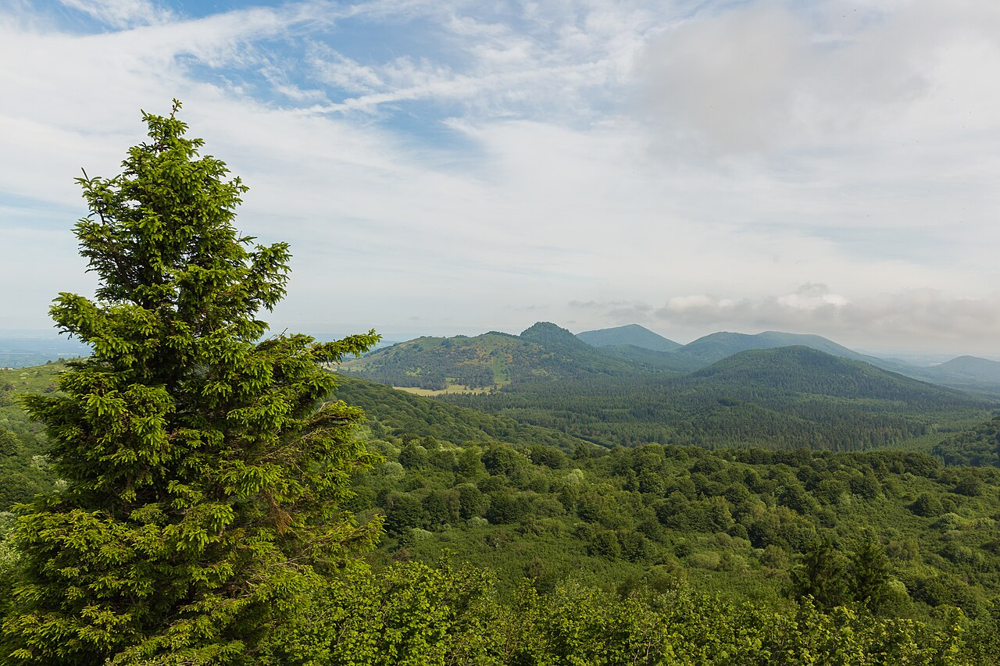
Photo: W. Crochot / Wikimedia Commons
A line of about 80 young volcanoes (Hanno, 2024) — cinder cones, lava domes, and crater lakes called maars — stretching across the Auvergne. They are dormant, with the last eruptions roughly 6,000–7,000 years ago, and the whole chain became a UNESCO World Heritage site in 2018 (USA TODAY, 2018).
02
Puy de Dôme — Auvergne (dormant)
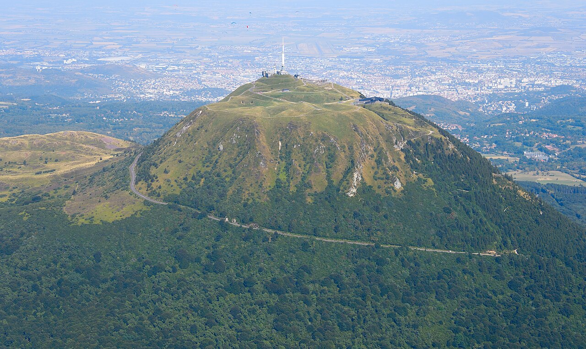
Photo: C. Steger / Wikimedia Commons
The best-known peak of the chain, a steep-sided lava dome built from thick, sticky lava that piled up rather than flowing away. It rises over the city of Clermont-Ferrand.
03
Cantal & Mont-Dore — Auvergne (dormant, eroded)
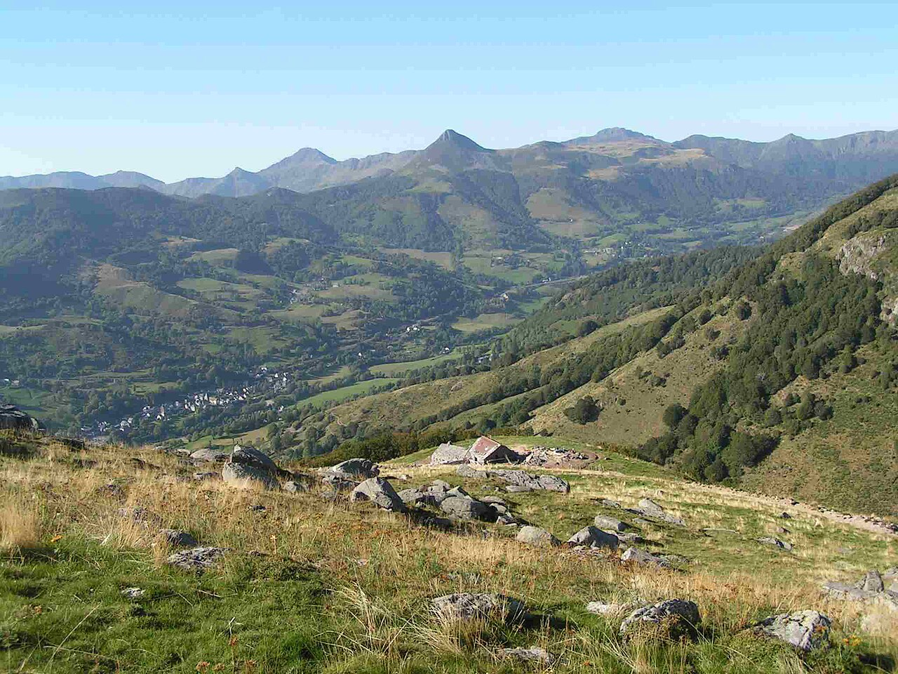
Photo: B. Montimart / Wikimedia Commons
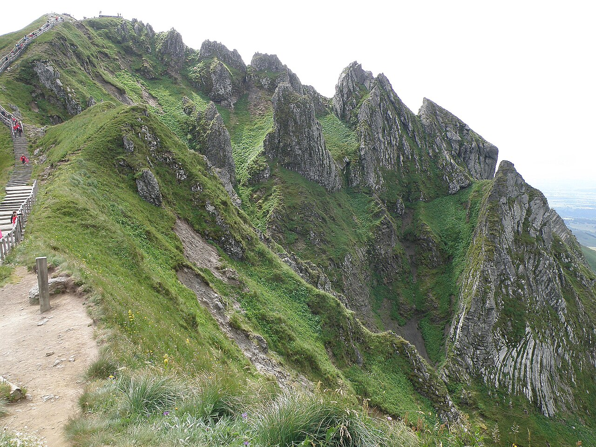
Photo: Torsade de Pointes / Wikimedia Commons
Much older and larger stratovolcanoes (composite volcanoes) that have been deeply eroded. The Cantal is the largest stratovolcano in Europe, though millions of years of erosion have carved it into ridges and valleys.
04
Montagne Pelée — Martinique (active)
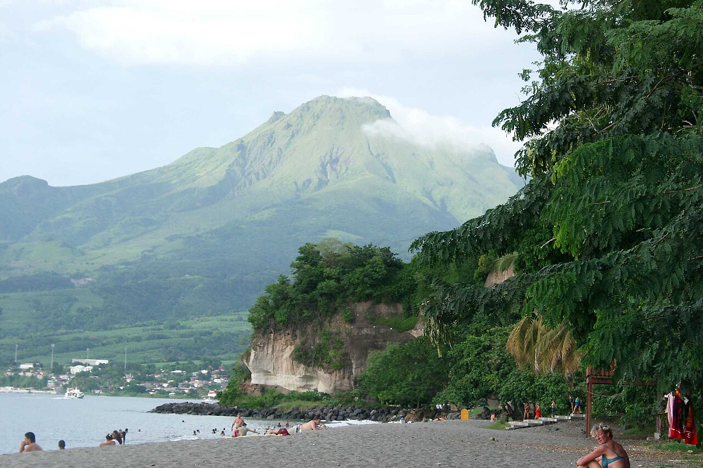
Photo: Wikimedia Commons
A composite volcano whose 1902 eruption sent a scorching cloud of gas and ash (a “nuée ardente,” or pyroclastic flow) into the city of Saint-Pierre, killing around 28,000–30,000 people in minutes (U.S. Geological Survey, n.d.-c). It was one of the deadliest eruptions of the 20th century, and the event that gave its name to “Peléan” eruptions.
05
La Grande Soufrière — Guadeloupe (active)
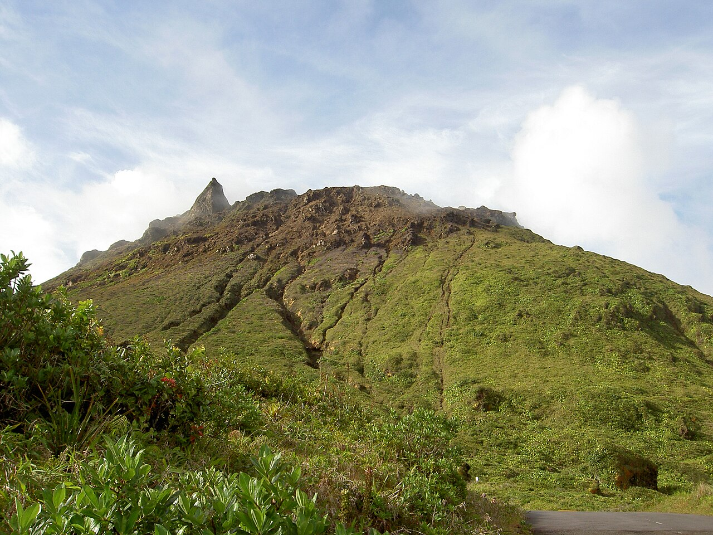
Photo: Ofol / Wikimedia Commons
An active stratovolcano whose 1976 unrest forced the evacuation of roughly 72,000 people from the surrounding area for months, even though a major eruption never came (The New York Times, 1976).
How do volcanoes affect the region?
Fertile soil and products: In Auvergne, volcanic rock breaks down into rich soils and pastures that support famous cheeses like Cantal and Saint-Nectaire (Smithsonian Magazine, n.d.),
and the volcanic bedrock filters the region's mineral water. In fact the Volvic brand is bottled right in the Chaîne des Puys (Danone, n.d.).
Tourism: The volcanoes draw many visitors, whether to hike the Puy de Dôme, visit the Vulcania volcano theme park, or watch eruptions of Piton de la Fournaise, one of the most active volcanoes in the world, on Réunion (NASA Earth Observatory, n.d.).
Threats: The overseas volcanoes are a real danger. An Example is the 1902 Mont Pelée disaster which remains a warning of how quickly a composite volcano can turn deadly.